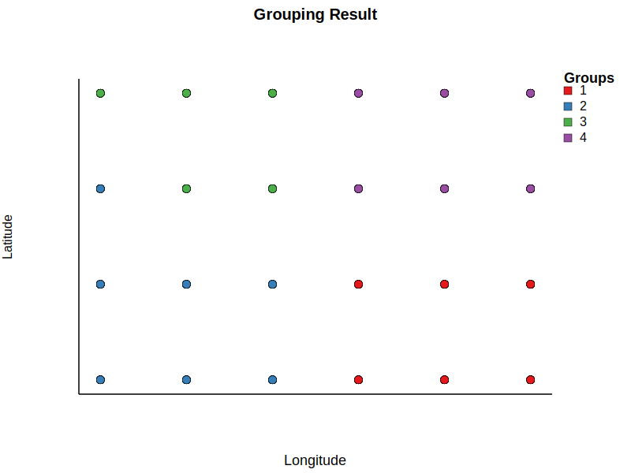

Example
Here, we will illustrate how to analyze the rodent data across space and time, first by focusing on how species composition changes across sites and sampling events (using CV_meta(), spatial_beta_div(), and temporal_beta_div()), then determining whether the changes are attributable to dispersal or niche processes (using create_groups(), plot_groups(), and DNCI_multigroup()), and finally estimating the niche space of every species and how the shared space with other species within the metacommunity (using the niche_overlap(), prop_patches(), average_MVNH_det() and, average_MVNH_dissimilarity()).
First, we will look at how abundance varies across time on species-level and community-level at both local and regional scales using CV_meta():
julia> using MetaCommunityMetrics
julia> df = load_sample_data()
julia> CV_meta(df.Abundance, df.Sampling_date_order, df.plot, df.Species)
1×4 DataFrame
Row CV_s_l CV_s_r CV_c_l CV_c_r
Float64 Float64 Float64 Float64
1 1.48859 0.944937 0.718266 0.580183From these results, when comparing CV_s_l to CV_s_r and CV_c_l to CV_c_r, we can see that variability in abundance at both the species and community level decreases, from local to regional scales, as spatial scale increases. Further, when comparing CV_s_l to CV_c_l and CV_s_r to CV_c_r, variability in abundance also decreases, from species to community level at local and regional scales, respectively. These result indicate that abundance at the community level is more stable than at the species level and abundance at the regional scale is more stable that at the local level.
Now, we analyze compositional changes using spatial_beta_div() and temporal_beta_div(). We will skip the illustration of beta_diversity() because it is mainly used as the root function that spatial_beta_div() and temporal_beta_div() depend on when analyzing data across space and time. We will only focus on abundance data here, but a similar interpretation of beta diversity decomposition also applies to occurrence data. The beta diversity decompositions of the rodent metacommunity in space based on species abundances:
julia> spatial_beta_div(df.Abundance, df.Sampling_date_order,
df.plot, df.Species; quant = true)
1×3 DataFrame
Row spatial_BDtotal spatial_Repl spatial_RichDif
Float64 Float64 Float64
1 0.264822 0.121882 0.142939The beta diversity decompositions of the rodent metacommunity in time based on species abundances:
julia> temporal_beta_div(df.Abundance, df.Sampling_date_order,
df.plot, df.Species; quant = true)
1×3 DataFrame
Row temporal_BDtotal temporal_Repl temporal_RichDif
Float64 Float64 Float64
1 0.311222 0.0995483 0.211674The differences in species composition across space are driven nearly equally by both replacement and abundance differences as the values are very close to each other. This indicates both differences in the total abundance of species, as well as the replacement of species contributes significantly to beta diversity across sites. On the other hand, the differences in community composition across time is primarily driven by abundance differences as the value of abundance differences is higher than that of replacement, meaning that more species are either lost of gained through time which then contributes to temporal beta diversity. This suggests that most sites are experiencing strong seasonal patterns or disturbance over time.
To further determine the relative contribution of the dispersal and niche processes, we will compute DNCI using DNCI_multigroup(). Although this index operates on one time point at a time, we do not have to worry about species that are absent or sites that are empty at a given time point, because DNCI_multigroup() will filter out species that are completely absent or present everywhere at a given time point in the data before calculating DNCI, and empty sites are allowed in our implementation.
Before computing the DNCI, we need to group sites using create_groups() to make sure we have at least two groups, a minimum of five sites per group, and that the variation in the number of species and sites per group does not exceed 40\% and 30\%, respectively. We can proceed as follows:
julia> grouping_result = create_groups(df.Sampling_date_order,
df.Latitude, df.Longitude, df.plot, df.Species, df.Presence)
Warning: Group count fell below 2 at time 10, which is not permissible for
DNCI analysis. Groups assigned as missing.
Warning: Group count fell below 2 at time 14, which is not permissible for
DNCI analysis. Groups assigned as missing.
Warning: Group count fell below 2 at time 76, which is not permissible for
DNCI analysis. Groups assigned as missing.
Warning: Group count fell below 2 at time 89, which is not permissible for
DNCI analysis. Groups assigned as missing.
Warning: Group count fell below 2 at time 99, which is not permissible for
DNCI analysis. Groups assigned as missing.
Dict{Int64, DataFrames.DataFrame} with 117 entries:
5 => 456×7 DataFrame…
56 => 456×7 DataFrame…
35 => 456×7 DataFrame…
55 => 456×7 DataFrame…
110 => 456×7 DataFrame…
114 => 456×7 DataFrame…
60 => 456×7 DataFrame…
30 => 456×7 DataFrame…
32 => 456×7 DataFrame…
6 => 456×7 DataFrame…
67 => 456×7 DataFrame…
45 => 456×7 DataFrame…
117 => 456×7 DataFrame…
73 => 456×7 DataFrame…
=> The output shows a dictionary with Sampling_date_order as the key. Not all time points fulfilled the grouping requirements and therefore the grouping memberships of all sites at these time points were assigned as missing. Note that Julia uses the Base.hash() function to compute hash values for the keys in a Dict, so the keys do not follow sequential order. Within each key, there is a DataFrame. For example, we can look at the grouping result at Sampling_date_order = 60:
julia> grouping_result[60]
456×7 DataFrame
Row Time Latitude Longitude Site Species Presence Group
Int64 Float64 Float64 Int64 String3 Int64 Int64?
1 60 35.0 -108.5 4 BA 0 1
2 60 35.0 -108.0 5 BA 1 1
3 60 35.0 -107.5 6 BA 0 1
4 60 35.5 -110.0 7 BA 0 2
5 60 35.5 -108.0 11 BA 0 1
452 60 35.5 -109.0 9 SH 0 2
453 60 35.5 -108.5 10 SH 0 1
454 60 35.5 -107.5 12 SH 1 1
455 60 36.0 -108.5 16 SH 0 4
456 60 36.5 -108.0 23 SH 0 4
446 rows omittedNow, we will use plot_groups() to visualize the grouping at Sampling_date_order = 60:
julia> plot_groups(grouping_result[60].Latitude, grouping_result[60].Longitude,
grouping_result[60].Group; output_file = "groups.svg")
We can then join the data df with grouping_result[60] to obtain the matrix and group assignment column for calculating DNCI at Sampling_date_order = 60.
julia> group_df = @pipe df |>
filter(row -> row[:Sampling_date_order] == 60, _) |>
select(_, [:plot, :Species, :Presence]) |>
innerjoin(_, grouping_result[60], on = [:plot => :Site,
:Species], makeunique = true)|>
select(_, [:plot, :Species, :Presence, :Group]) |>
unstack(_, :Species, :Presence, fill = 0)
julia> comm= @pipe group_df |>
select(_, Not([:plot,:Group])) |>
Matrix(_)
24×19 Matrix{Int64}:
0 1 1 0 0 1 1 0 0 0 0 0 0 0 0 1 0 1 0
1 1 1 0 0 0 1 0 1 0 0 0 0 1 0 1 0 0 0
0 1 1 0 0 0 0 0 1 0 0 0 0 1 0 1 0 0 0
0 1 1 0 0 1 1 0 0 0 0 0 0 1 0 0 0 0 1
0 1 1 0 0 0 1 0 0 0 0 0 0 1 0 0 0 0 0
0 1 1 0 0 0 0 1 1 0 0 0 0 0 0 1 0 0 0
1 1 1 0 0 0 0 0 0 0 0 0 0 1 0 1 0 0 0
1 1 1 0 0 1 1 0 1 0 0 0 0 1 0 0 0 0 0
0 1 0 0 1 0 0 1 0 0 0 0 1 1 0 0 0 0 0
0 1 1 0 0 1 1 0 1 0 0 0 0 1 0 1 0 0 1
0 0 0 0 1 1 1 1 1 0 0 0 0 0 0 1 0 0 0
1 1 0 0 0 1 1 1 0 1 0 0 0 1 0 0 0 0 0
0 0 0 0 0 0 1 1 1 1 0 0 0 1 0 1 0 0 0
0 0 0 0 0 1 1 0 1 0 0 0 0 1 0 1 0 0 1
0 0 0 0 0 0 1 1 1 0 0 0 1 1 0 1 0 0 0
0 0 0 0 0 1 1 0 1 0 0 0 1 1 0 1 0 0 0
0 0 0 0 0 0 0 1 1 1 0 0 1 0 0 0 0 0 0
0 0 0 0 0 1 0 1 0 0 0 0 0 0 0 0 0 0 0
0 0 0 0 0 0 1 0 1 0 0 1 1 0 0 0 0 0 0
0 1 0 0 0 1 1 0 1 0 0 0 0 0 0 0 0 0 0
0 0 0 0 0 0 0 0 1 0 0 0 0 1 0 0 0 0 0
0 0 0 0 1 0 1 0 1 0 0 0 1 0 0 1 0 0 1
0 0 1 0 0 0 1 0 1 0 0 0 0 0 0 1 0 0 0
0 1 0 0 0 0 0 1 0 0 0 0 1 0 0 0 0 0 0We can then compute the DNCI at Sampling_date_order = 60 (please use the same seed to obtain the following result):
julia> Random.seed!(1234)
julia> DNCI_result = DNCI_multigroup(comm, group_df.Group, 1000; Nperm_count = false)
6×6 DataFrame
Row group1 group2 DNCI CI_DNCI S_DNCI status
Int64 Int64 Float64 Float64 Float64 String
1 1 2 -3.41127 2.17348 1.08674 normal
2 1 3 -2.44866 2.05951 1.02976 normal
3 1 4 -2.3671 2.45697 1.22848 normal
4 2 3 -2.65022 2.28931 1.14466 normal
5 2 4 -3.0168 2.43496 1.21748 normal
6 3 4 -1.83521 1.9589 0.979449 normalThe DNCI values at Sampling_date_order = 60 do not differ significantly from zero for group pairs 1-4 and 3-4, while the rest are significantly smaller than zero. This indicates that most local communities in this metacommunity are dominated by dispersal processes, while both dispersal and niche processes contribute evenly to some local communities at Sampling_date_order = 60. To draw conclusions about the entire metacommunity over time, we suggest running this function for all available time points and averaging across all group pairs at all time points.
We will now investigate how species share their niche spaces across all sites and time points using niche_overlap(), prop_patches(), average_MVNH_det(), and average_MVNH_dissimilarity(). We will start with niche_overlap():
julia> niche_overlap(df.Abundance, df.Species, df.plot, df.Sampling_date_order)
1×3 DataFrame
Row mean_niche_overlap_index min_niche_overlap_index max_niche_overlap_index
Float64 Float64 Float64
1 0.0923816 0.0 0.406837Then, we will use prop_patches():
julia> prop_patches(df.Presence, df.Species, df.plot)
1×3 DataFrame
Row mean_prop_patches min_prop_patches max_prop_patches
Float64 Float64 Float64
1 0.734649 0.0833333 1.0Finally, we will calculate the average niche volume and average niche volume dissimilarity across all species using average_MVNH_det() and average_MVNH_dissimilarity(), respectively. Note that these functions, unlike the others, require environmental data, which is already available in our sample dataset (i.e., temperature and precipitation). These environmental variables were already standardized and checked for normality before being stored as our sample data. Note that users need to (1) standardized their environmental variables and transform them to normal distribution (if necessary); and (2) remove singletons before using these functions. The following demonstrates how we use these functions:
julia> df = @pipe load_sample_data() |>
groupby(_, :Species) |>
filter(row -> sum(row.Presence) > 1, _)|>
DataFrame(_)
julia> env_data = @pipe df |>
select(_, [:standardized_temperature, :standardized_precipitation])
julia> average_MVNH_det(env_data, df.Presence, df.Species; var_names =
["Temperature", "Precipitation"])
1.2103765096417536
julia> average_MVNH_dissimilarity(env_data, df.Presence, df.Species;
var_names = ["Temperature", "Precipitation"])
0.03059942936454443Recall that mean_prop_patches does not account for the time point a species occupy a site but mean_niche_overlap_index accounts for spatiotemporal overlap between a pair of species. Therefore, a high mean_prop_patches value and a low mean_niche_overlap_index value suggest that most species occupy most of the sites yet at different time points. The MVNH (average_MVNH_det and average_MVNH_dissimilarity) metrics provide additional context. While their values do not directly reveal the intensity of species co-occurance (since they can take any non-negative value up to infinity), the low value of average_MVNH_dissimilarity ($\sim$ 0.03), which is close to zero, suggests high environmental niche similarity. High environmental niche similarity, together with the above result, suggest species experience high temporal turnover, potentially due to temporal niche partitioning, where species rarely co-occur in the same site at the same time even when they share similar environmental niche.